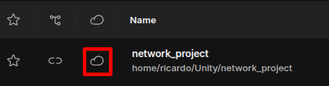
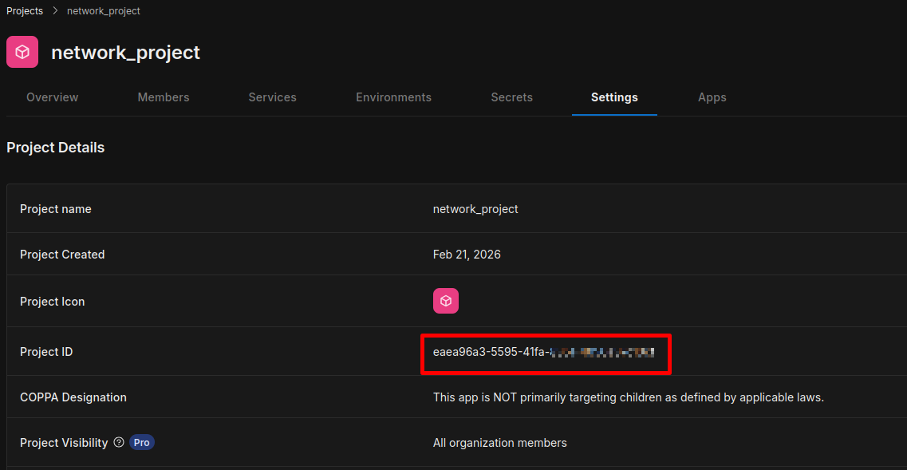
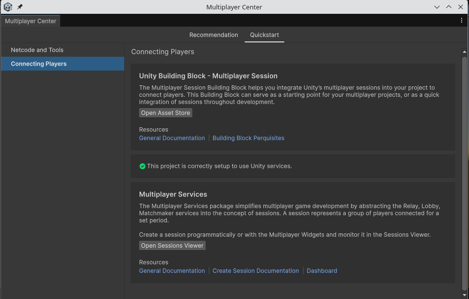
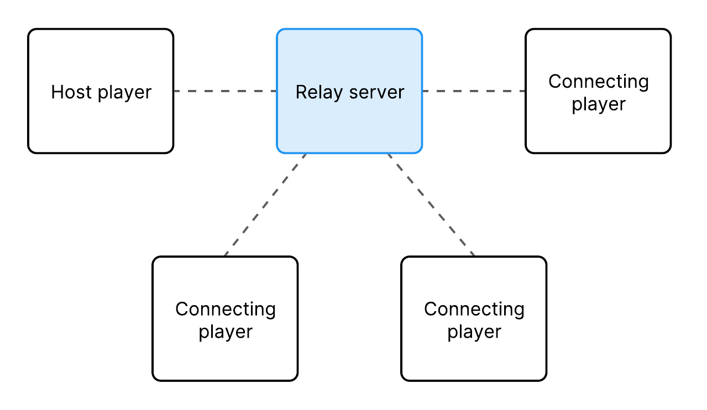
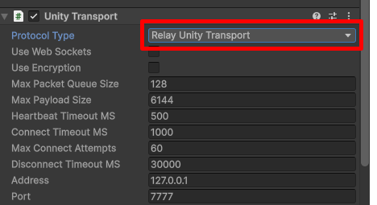

4.1 Serveis d'Internet per a Videojocs en xarxa
En aquesta secció, explorarem els serveis d'Internet que proporciona Unity per a videojocs en xarxa. Configurarem el nostre joc per a utilitzar aquests serveis i aprendrem a gestionar les connexions dels jugadors.
Serveis d'Internet de Unity
Unity ofereix diversos serveis d'Internet que faciliten la creació de videojocs en xarxa. Aquests serveis inclouen:
- Unity Relay: Un servei que permet als jugadors connectar-se entre si a través d'un servidor intermediari, facilitant la connexió en entorns on els jugadors poden estar darrere de firewalls o NATs.
- Unity Lobby: Un servei que permet als jugadors crear i unir-se a lobbies de joc, on poden xatejar, configurar les opcions del joc i esperar a que altres jugadors s'uneixin abans de començar la partida.
- Multiplayer Matchmaker: Un servei que facilita la creació de sistemes de matchmaking per als nostres jocs en xarxa, permetent als jugadors trobar partides i oponents de manera ràpida i eficient.
- Multiplayer Services SDK: Un conjunt d'eines i API que faciliten la integració dels serveis d'Internet de Unity en els nostres jocs, permetent gestionar connexions, lobbies, matchmaking i altres funcionalitats relacionades amb el multiplayer. En les últimes versions de Unity, aquest SDK unifica les funcionalitats dels serveis d'Internet, substituint els anteriors paquets de Relay, Lobby i Matchmaker, encara que aquests serveis continuen funcionant de manera independent. Per tant, serà aquest paquet el que utilitzarem per a integrar els serveis d'Internet de Unity en el nostre joc.
En aquesta secció partim de que el nostre joc ja funciona en xarxa local, amb els complements Multiplayer Play Mode i Netcode for GameObjects. El següent pas és configurar el nostre joc per a utilitzar el paquet Multiplayer Services SDK i connectar-nos a partides remotes usant el servei de Relay de Unity.
Multiplayer Services SDK
Unity Multiplayer Services (MPS) proporciona un marc complet per a crear jocs multijugador, oferint solucions per a xarxes, allotjament de servidors i connexions de jugadors. El SDK de Multiplayer Services (MPS) unifica Lobby, Matchmaker i Relay sota una única API cohesionada, substituint els seus SDK individuals. Aquest enfocament consolidat redueix la complexitat del desenvolupament mentre manté totes les capacitats de la infraestructura multijugador de Unity.
Info
El paquet Multiplayer Services SDK inclou components per a gestionar connexions, lobbies, matchmaking i altres funcionalitats relacionades amb els serveis d'Internet de Unity. Substitueix els anteriors paquets Unity Relay i Unity Lobby, encara que aquests serveis continuen funcionant i es poden utilitzar de manera independent.
Abans de començar a integrar els serveis d'Internet de Unity en el nostre joc, és important assegurar-nos que tenim tot el necessari per a treballar amb aquests serveis.
Per a màxima compatibiltat, es recomana que el projecte siga creat amb la versió 6 o superior de Unity amb el Universal 3D Template.
A continuació, es detallen els passos per a preparar el nostre projecte i començar a utilitzar els serveis d'Internet de Unity.
Preparació de Unity Gaming Services
Com començar amb UGS
Per a començar a utilitzar UGS amb el teu projecte de Unity necessitem que estiga donat d'alta en el servei de Unity Cloud. Pots comprovar que està en el Unity Cloud en Unity Hub:

Podem comprovar que està en el Unity Cloud també des del Unity Dashboard:
- Ves a Unity Dashboard.
- En l'apartat de Projects, comprova que el teu projecte està llistat i selecciona'l per a veure els serveis associats.
- Comprova el Project ID del teu projecte en la pestanya Settings.

- Al teu projecte de Unity, ves a Edit > Project Settings > Services i comprova que el Project ID coincideix amb el que tens en el Unity Dashboard.
Si el teu projecte no està enllaçat al Unity Cloud, pots enllaçar-ho directament en el Unity Hub fent click en la columna Cloud del projecte que vols enllaçar.
Una vegada enllaçat el projecte al Unity Cloud, ja pots començar a utilitzar els serveis d'Internet de Unity en el teu joc. En el Unity Dashboard, pots configurar els serveis que vols utilitzar, com ara Relay, Lobby o Matchmaker, i després integrar-los en el teu joc utilitzant el Multiplayer Services SDK.
Inicialitzar Unity Gaming Services i autenticar el player
Primer has d’inicialitzar Unity Gaming Services per al teu projecte abans de poder utilitzar les seues funcionalitats i començar el teu joc multijugador. Per a inicialitzar Unity Gaming Services i autenticar el player:
- En l’Editor de Unity, ves a la finestra Project, després selecciona Assets > Scripts.
- Fes clic dret en Scripts.
- Selecciona Create > Scripting > MonoBehaviour Script.
- Anomena l’script
SessionManager. - Fes clic dret en la jerarquia de l'escena principal i crea un Empty GameObject dins de Managers.
- Escriu
SessionManagercom a nom. - Afegeix l'script al GameObject
SessionManagerarrossegant l'script des de la finestra Project fins al GameObject en la jerarquia. - Substitueix el contingut de
SessionManager.cspel següent codi:
1 2 3 4 5 6 7 8 9 10 11 12 13 14 15 16 17 18 19 20 21 | |
En el codi anterior:
- La línia
await UnityServices.InitializeAsync();inicialitza els SDK de Unity Gaming Services. - La línia
await AuthenticationService.Instance.SignInAnonymouslyAsync();autentica el Unity player de manera anònima.
L’autenticació anònima no requereix cap configuració especial, cosa que la fa més fàcil d’utilitzar que l’autenticació externa i més adequada per a prototips.
Instal·lació del SDK
Importem el paquet Multiplayer Services SDK des del Package Manager de Unity. Aquest paquet ens proporciona les eines necessàries per a integrar els serveis d'Internet de Unity en el nostre joc.
Info
També podem importar el paquet Multiplayer Widgets per a utilitzar els widgets predefinits que faciliten la creació d'interfícies d'usuari per a les funcionalitats de multiplayer. Aquest paquet està deprecat, però encara es pot utilitzar si volem aprofitar els widgets existents o investigar el seu codi font per a crear els nostres propis widgets personalitzats.
Per a instalar-ho anem a Window > Package Manager > + > Add package by name i introduïm el nom del paquet que volem importar: com.unity.multiplayer.widgets.
Multiplayer Center
Obrim el Multiplayer Center des de Window > Multiplayer > Multiplayer Center. Aquest panell ens permet gestionar les nostres connexions, lobbies i altres aspectes relacionats amb els serveis d'Internet de Unity.
Instal·lem els components que ens demana en la pestanya Quickstart.

Dins de Quickstart > Multiplayer Services podem fer click en Open Sessions Viewer per a veure les sessions de joc que s'estan creant quan els jugadors es connecten al nostre joc.
Unity Relay
Unity Relay ofereix una manera perquè els desenvolupadors de jocs proporcionen una connectivitat millorada i segura entre jugadors mitjançant un flux de treball basat en codis d’unió (join code), sense necessitat d’invertir en solucions de tercers, mantindre servidors dedicats de joc (Dedicated Game Servers - DGS) o preocupar-se per la complexitat de xarxa d’un joc peer-to-peer. En lloc d’utilitzar DGS, el servei Relay proporciona connectivitat a través d’un servidor Relay universal que actua com a intermediari. El servei Relay té dos components clau: els Relay servers i el Relay Allocations service.
El servei Relay facilita el suport multijugador sense servidors dedicats permetent que els jugadors es comuniquen entre ells a través dels servidors Relay. Aquests servidors transmeten missatges entre jugadors connectats utilitzant intercanvis de datagrames de baixa latència entre clients del joc, de manera que cap jugador es connecta directament amb un altre. Els servidors Relay són ideals per a jocs que utilitzen un model de listen server o host, on un jugador (l’amfitrió) actua com a “servidor” i la resta (els jugadors que s’uneixen) actuen com a “clients”.
Els servidors Relay funcionen com a punts d’accés públics accessibles per a tots els jugadors. Aquest disseny resol problemes comuns com els canvis de xarxa i d’adreces IP, la traducció d’adreces de xarxa (NAT) i els tallafocs entre jugadors. Cada jugador pot connectar-se a la mateixa adreça IP i port (els del servidor Relay seleccionat), i els clients del joc poden confiar que la informació de connexió es mantindrà estable durant tota la sessió. Gràcies a aquesta intermediació, els jugadors no necessiten conéixer les adreces IP dels altres, cosa que augmenta la seguretat i la privacitat.
Relay és un servei PAYG (pay as you go - pagament per ús) amb un nivell gratuït. Si superes el límit mensual d’ús del nivell gratuït, hauràs d’introduir la informació de pagament per a mantindre l’accés complet a Relay i a qualsevol altre servei.

Preparació d'un Relay Server
Si usem el Multiplayer Services SDK, no és necessari configurar un servidor Relay manualment, ja que el SDK s'encarrega de gestionar les connexions i la comunicació amb els servidors Relay de Unity.
L'unic canvi que s'ha de fer és configurar el NetworkManager de la nostra escena Bootstrap per a utilitzar Relay Unity Transport en lloc de Unity Transport com a transport per a les connexions de xarxa.
